History, Science and Design with Algae
In the early 1800’s Confederate warship entered what its captain described as a “remarkable patch of the sea.” This ship was sailing southwest along the Horn of Africa, was one of several vessels cruising the world’s oceans during the U.S. Civil War, pressuring the Union by raiding merchant ships. Although they were formidable pirates, the Captain Raphael Semmes and his crew were spooked by the sea they encountered that January evening.
“At about eight P.M., there being no moon, but the sky being clear, and the stars shining brightly, we suddenly passed from the deep blue water in which we had been sailing, into a patch of water so white that it startled me,” Semmes recounted in a memoir.
After almost a hundred years, and similar experiences by many other sailors across the world, we finally understood what was happening.Researchers were able to collect samples and suggested that milky seas occurred after algae colonies on the water’s surface bloomed and died. When the dead algal cells ruptured, they released lipids subsequently consumed by bacteria, which then multiplied furiously, eventually becoming concentrated enough to produce a continuous glow. There are several types of microalgae which are bioluminescent along with a range of marine organisms which exhibit this feature.
Before going further, I’m humbled to write about seaweed, a material I have been focusing on during my time at the Rhode Island School of Design, and I’m really excited to share all that I have learned about Seaweed biomaterials since the past year at the RISD Nature Lab.
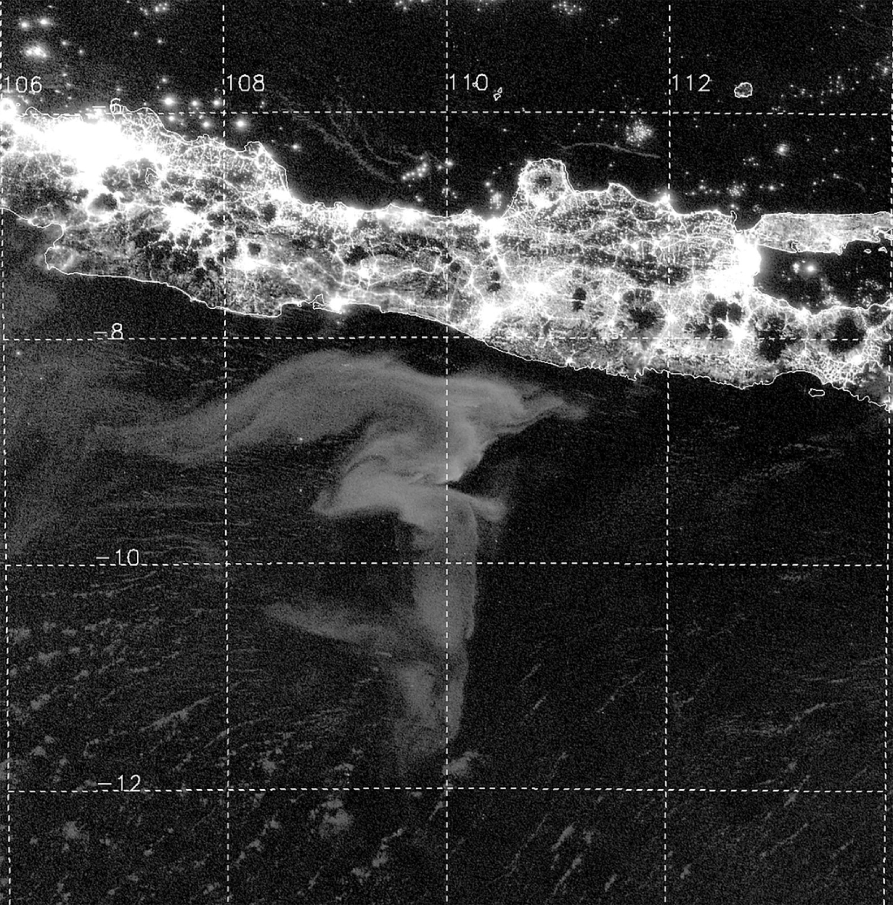
Around the same time, in the mid 1800’s where influential naturalists like Charles Darwin helped develop a popular interest in science and nature. Seaweed collecting embodied a cross-section of Victorian-era pursuits, allowing people to explore nature, improve their scientific knowledge, and create an attractive memento to decorate their homes. By the 1840s, several books on identifying and preserving seaweed had been published, including the series “Photographs of British Algae,” by Anna Atkins. Atkins’ guide is considered the first-ever book of photography, as she used cyanotype prints to document various species, seaweed was placed onto photo-sensitive paper and exposed to light, resulting in a negative image.
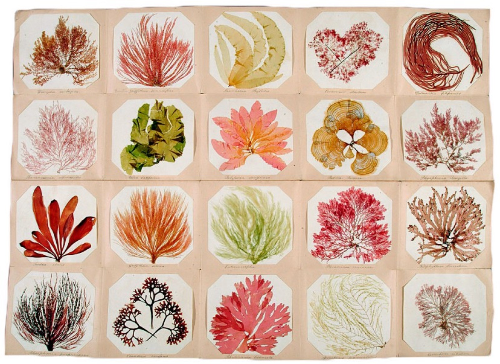
So let’s take a step back, and let’s dive in to look at seaweed. And let me ask you this question: Do you think seaweed is a plant or animal? Which kingdom does it belong to?
It’s complicated because seaweed is an informal term and used to describe a huge range of marine organisms. Seaweed is a type of Algae. Algae can be placed under multiple kingdoms. Most of algae fall under Protists and it can be differentiated according to the cellular nature of algae. There are over 30,000 species of algae that are known to us, but in theory, there could be hundreds of thousands or millions of yet undescribed types of algae. Interestingly, the predecessor of land plants is also theorized to have evolved from algae when they moved inland from the coasts.
You might think algae is a green murky thing you find when swimming on the beach, but that might just be one type of green algae which is the plant-like macro algae are grouped in the same kingdom as plants. They are grouped with land plants that have true roots, stems, and leaves, although the algae don’t have them. However, there are also algae that are bacteria. For example, photosynthetic cyanobacteria are classified in the kingdom Monera or bacteria. We generally classify algae under characteristics of color which are green, red, brown.
Another way to fundamentally classify them is based on their size: Microscopic algae is unicellular and can be found all across the seas, it’s naked to the visible eye and can live individually or form colonies. This is also what we know as phytoplankton, which covers vast expanses of the ocean. The algae we can harvest is generally macroscopic, it forms large multicellular organisms. When we talk about seaweed, it falls under the macroscopic category.
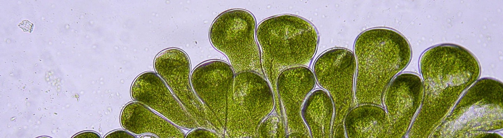
These interests and understanding of algae kept growing, and now their use is so widespread that no matter where you are, you probably used seaweed in some way or another. We use many species of seaweed for food, cosmetics, pharmaceuticals and agricultural fertilizer production. Did you know that more than 70 percent of all the foods that you buy in the supermarket contain products derived from seaweeds? Including ice cream, toothpaste, cookies and beer!
An extract from algae called Algin helps prevent separation of ingredients as a stabilizer in gravies, soups, and sauces. It can also similarly be used as an emulsifier, which helps blend together substances that don’t normally mix, for items such as oil and vinegar salad dressing. And it’s not just for human food — algin is often used to give pet food its texture, as well! Since it’s a foaming agent, algin can also be used in beer to help maintain its head.
Algin has many pharmaceutical applications, as well. In medicine tablets it can be used a binding agent to hold them together, and then to help them disintegrate in the stomach. It may be included in throat lozenges as a demulcent, something that soothes and protects mucous membranes with a thin film. It may also be used in antacid medications to form a coating in the stomach to protect from acid reflux and indigestion. A unique medical purpose for a certain type of algin — calcium alginate — has been found for wound dressings. The fibers are absorbent and take in fluid, creating a moist healing environment that can also be rinsed away with a saline solution for easy removal.
One of algin’s most common applications is in manufacturing: it is often used as a thickener for textile dyes, which can help give a more precise application of the color onto the fabric. In fact, the textile industry accounts for about 50% of algin use worldwide. It is similarly used in paint for thickness, and to stabilize the mix of pigments. In paper manufacturing, paper may be given a coating containing algin to give it a smooth surface. In cosmetics, algin is used to create a gel coating in face masks. It is also found in many other cosmetic products, like shampoo and lotion, as well. In lipstick, algin is used to help maintain a smooth texture that stays on the lips.
Seaweed also evolved other specialized cells that could help the whole plant survive. Different types of seaweed have different specialized cells. All seaweeds arrange their cells into flat leaves so that as many cells as possible get direct sunlight. Many seaweeds have holdfasts, finger-like projections like roots that hold on to the rocks. Some seaweeds have stalks that support the leaves like the stem of a flower. They take up nutrients generated by the constantly moving seawater.
Some make hollow air-filled balls called floats, that hold the seaweed up closer to the surface of the water where there’s more sunshine. A gas-filled pneumatocyst is found beneath the blade, which floats the kelp at the surface. But seaweed has no vascular system to distribute food and water. Instead, each cell makes its own food by photosynthesis inside its chloroplasts. Because seaweed doesn’t have a vascular system, scientists think of it as one of the algae instead of as a plant.
Large brown algae are used as shelter for some bottom-dwelling animals. They also serve as substrates for other algae that grow as epiphytes, or plants that grow on other plants. They also provide shelter and homes for numerous fishes, invertebrates, birds, and mammals. Seaweeds are therefore essential to marine ecosystem health and longevity. Seaweeds also provide an important habitat. Species such as kelps can form vast forests, offering shelter for many species to spawn and providing nursery grounds for juveniles.
These enormous kelps grow upward through the water column to 20–30 m in length. These plants grow toward the surface where they can spread their blades to obtain sunlight, which often blocks sunlight from other organisms. Beneath the canopy, an “understory” of algae is found, which forms another layer.
Kelps grow extremely quickly under the right conditions. Growth rates of 6 cm/day have been recorded in Nereocystis luetkanan (Scagel 1947) and Macrocystis pyrifera has been recorded at 50 cm/day (North 1971) on the California coast.
Fishing nets are a huge percentage of plastic and waste in the ocean, and we’ve seen kelp growing on these fishing nets as an anchor. And we see micro-biomes form around these fishing net seaweed things. This speaks so much to the adaptability of nature and how it takes different forms to create a resilient ecosystem for itself.
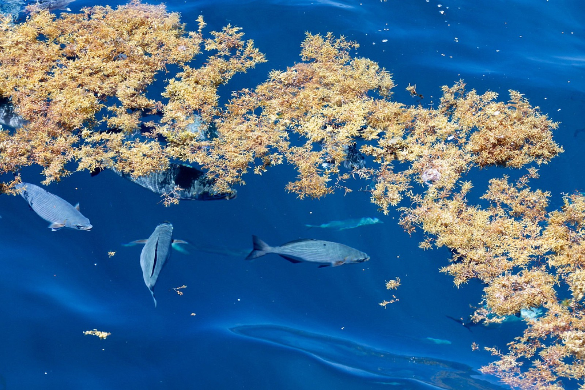
Phytoplankton (microalgae) and seaweed (macroalgae) form the bases of aquatic food webs, underpinning the chain and play an integral role in the marine ecosystem. They are eaten by primary consumers like zooplankton, small fish, and crustaceans. Primary consumers are in turn eaten by fish, small sharks, corals, and baleen whales. Top ocean predators include large sharks, billfish, dolphins, toothed whales, and large seals. Humans consume aquatic life from every section of this food web.
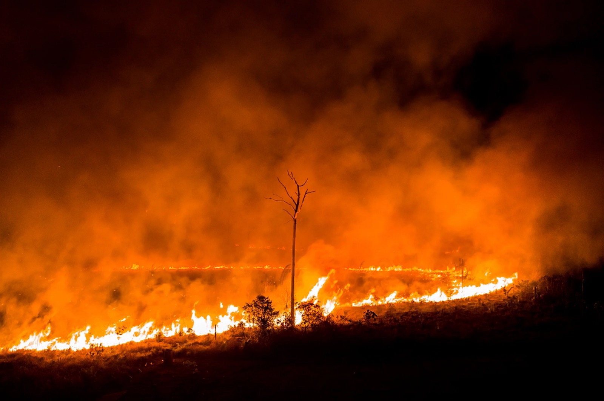
As fires rage in the Amazon, people have latched onto the phrase that the Amazon is the “lungs of the earth.” Our hearts collectively burst for the Amazon for two reasons: One was for the environmental and ancestral tragedy of watching an icon location burn, and the other for the fact that this 6 to 8 million square kilometers of forest plays a vital role in removing world-heating carbon dioxide out of the air. The longer the fires burn, the less natural air filtration the Earth will have. But while the Amazon plays a vital role in global carbon absorption (and we should continue to try and save it), between 1994 and 2007, our oceans absorbed 34 gigatons of the world’s carbon through algae, vegetation, and coral. In other words, the trees might not save us — but the oceans could. Trees alone will therefore not save us from the current crisis. We must look to our oceans for solutions that are more effective and scalable.
Algae can be utilized in a number of ways to reduce carbon in the atmosphere. Other than it being the most efficient solution for storing carbon dioxide, it can be easily used in a variety of other sustainable and commercial products or materials, from tennis shoes to steel alternatives to veggie burgers. Algae replicates the same process but “absorbs” the carbon in the form of more algae. Algae can consume more carbon dioxide than trees because it can cover more surface area, grow faster, and be more easily controlled by bioreactors, given its relative size.
Toxic blue-green algae thrive in warm, slow-moving water. Harmful algae such as toxic blue-green algae usually bloom during the warm summer season or when water temperatures are warmer than usual. Warmer water due to climate change might favor harmful algae in a number of ways:
Climate change might lead to more droughts, which make freshwater saltier. This can cause marine algae to invade freshwater ecosystems. In the southwestern and south central United States, toxic marine algae have been killing fish in freshwater lakes since 2000.
Algae need carbon dioxide to survive. Higher levels of carbon dioxide in the air and water can lead to rapid growth of algae, especially toxic blue-green algae that can float to the surface of the water. Climate change might affect rainfall patterns, leading to alternating periods of drought and intense storms. This can cause more nutrient runoff into waterbodies, feeding more algal blooms.
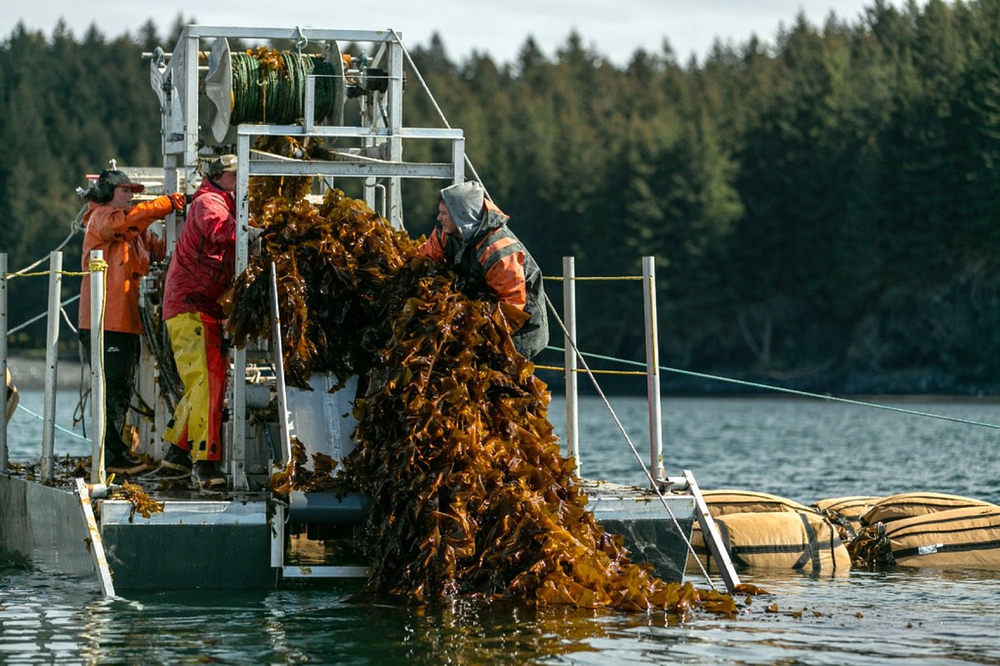
While seaweed is traditionally harvested from wild stocks, the vast majority is now farmed. Farmed seaweed is typically grown on ropes or nets at sea, or in tanks or ponds in land-based systems. The farmed seaweed industry is growing rapidly and production increased from 13.5 million tonnes in 2005 to 29.4 million tonnes in 2015. In comparison, around one million tonnes of wild seaweed is harvested every year.
The microalgae industry is also developing. It is grown in land-based systems, such as tanks and biorefineries, and can be produced on an industrial scale.
Photobioreactors are another frequently-proposed tool for cultivating algae. These artificial growth chambers have controlled temperature, pH, and nutrient levels that make for optimal growth rates of algae [12]. They can also run off of wastewater that is not suitable for human consumption. Photobioreactors minimize evaporation and, with the addition of iron, magnesium, and vitamins, rates of carbon dioxide capture are increased. Due to the high concentration of algae in a relatively small space, photobioreactors have the highest rates of photosynthesis out of all of the cultivation methods.
This technology was driven primarily by the need to come up with an alternative to triggering open-ocean algal blooms. Photobioreactors eliminate pollution and water contamination risks that are prevalent in harmful algal blooms. Furthermore, they make raw algal biomass easily accessible for collection and use as a biofuel, which open-ocean algal blooms do not.
The main drawback to this method is that the cost of building and maintaining photobioreactors is simply too high to be economically feasible right now . Their long-term economic feasibility still remains unknown, as most of the cost is endured during the production of the photobioreactors. Money is made back through the algae cultivated, but the technology hasn’t been around long enough to show concrete long-term cost-benefit analyses without speculation.
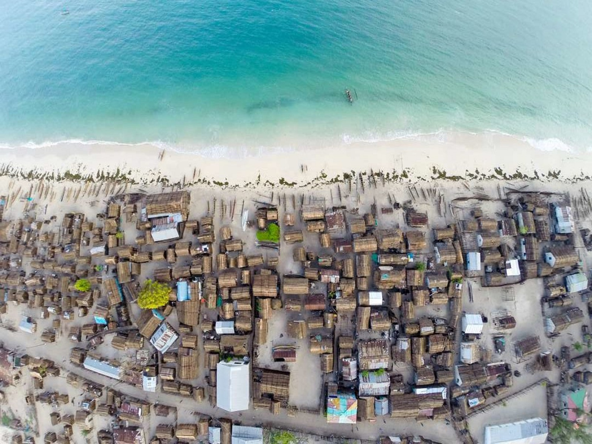
We’ve predominantly focused on living inland, but can we reorient communities to thrive around coasts? Because there are so many similarities between algae and plants, we can try to utilize them.
Seaweeds are rich in nutrients, such as fiber, calcium, folic acid, iodine and vitamin K and have been an important source of food, animal feed and fertilizer for coastal communities for thousands of years. Studies have shown significant health benefits to eating seaweed, including reduced blood pressure and improved digestive health. It’s no wonder seaweeds are trending as the new superfood. Edible seaweeds and microalgae are now gaining popularity worldwide, notably in Europe where the demand for edible seaweed products is rising due to increased interest in health benefits. As the global demand for seaweed and microalgae rises, it is important they are harvested and farmed sustainably and have a minimal impact on the natural environment. Without good management practices in place, seaweed cultivation can have a range of adverse impacts, including changes in water quality and disruption of local ecosystems. Since its large areas used for harvesting, it doesn’t fit into the natural environment.
Seaweed, like land plants, use photosynthesis to turn carbon dioxide (CO2) into seaweed biomass. This process is known as carbon sequestration. Seaweed grows fast, really fast, so it can suck up CO2 at a phenomenal rate. Once that CO2 is locked up in seaweed biomass it can be harvested for use, or, it can sink to the seafloor or be stored underground where all that excess CO2 originally came. Scientists have been assessing the carbon sequestration potential of seaweed for the last couple decades. It seems like a simple solution: ramp up seaweed aquaculture to capture CO2 and slow down or reverse climate change.
So, where are all the climate change fighting seaweed farms? There are several critical hurdles to cross before seaweed can save us from climate change. First, for a seaweed carbon sequestration market to develop there must be someone willing to pay to store carbon in seaweed. Second, government policies need to support industry development. Policies that encourage aquaculture, a streamlined permitting process, and no overly strict regulations can help new farmers and investors enter the industry. Unfortunately, many agencies have no framework for seaweed aquaculture and are tripping over out-of-date, restrictive policies. Zoe Lee, Co-Founder SCUP Aquaculture in Rhode Island mentions how there is a competition for space between seaweed farmers and wind-turbines, creating complex challenges. She mentions "Navigating organizational and community needs to have a system for multi-use of resources".
Strategic design of materials and products using seaweed as an affluent resource opens possibilities in putting forth desirable solutions at a high quality of experience - shifting behaviors, mindsets and creating a space for regenerative natural resources to replace harmful materials in current use. This was investigated during a RISD grad studio project, Seaweed Packaging and it was a privilege to share this work during a talk at the Brown-RISD Innovation Community.
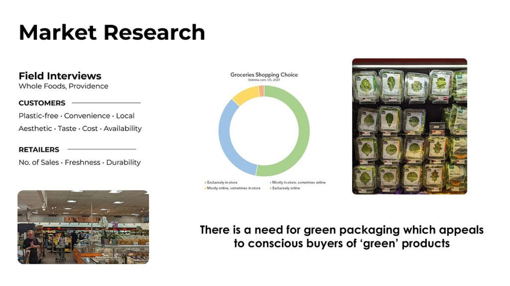
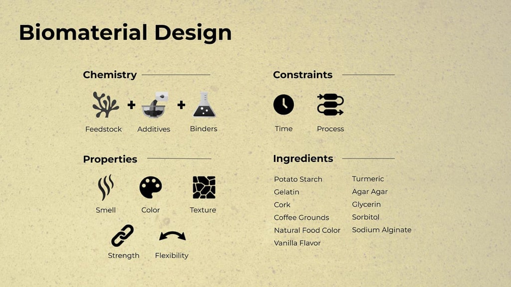
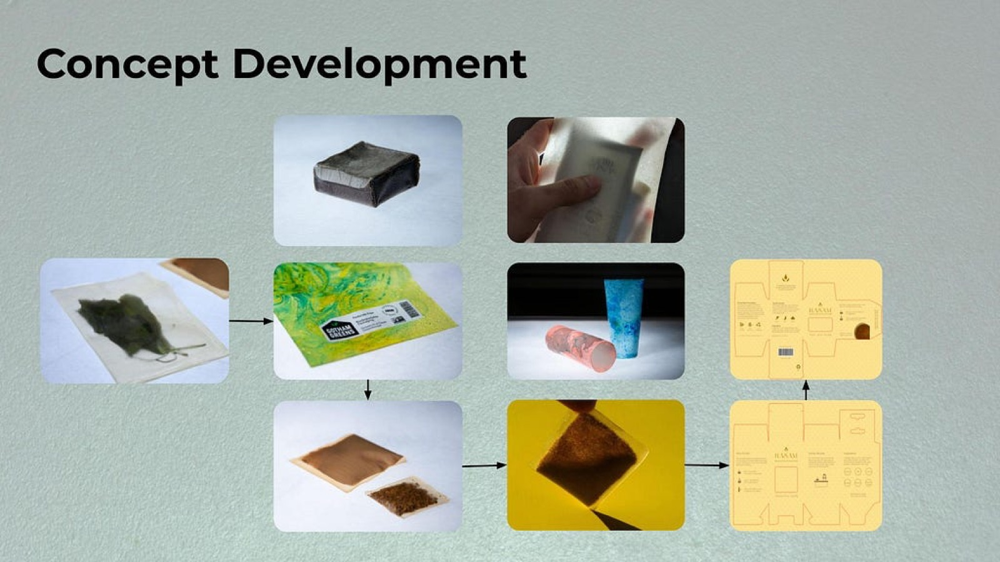
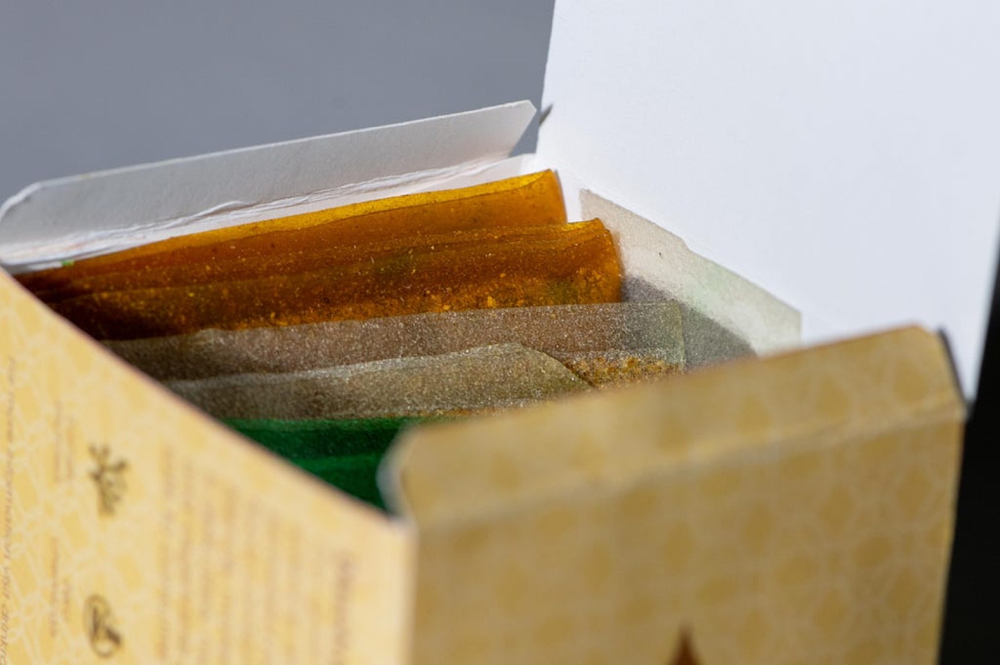
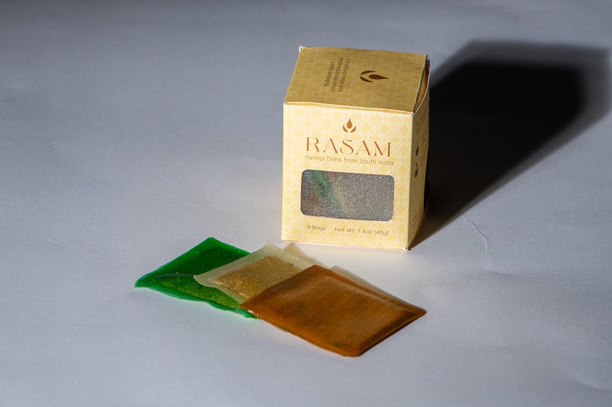
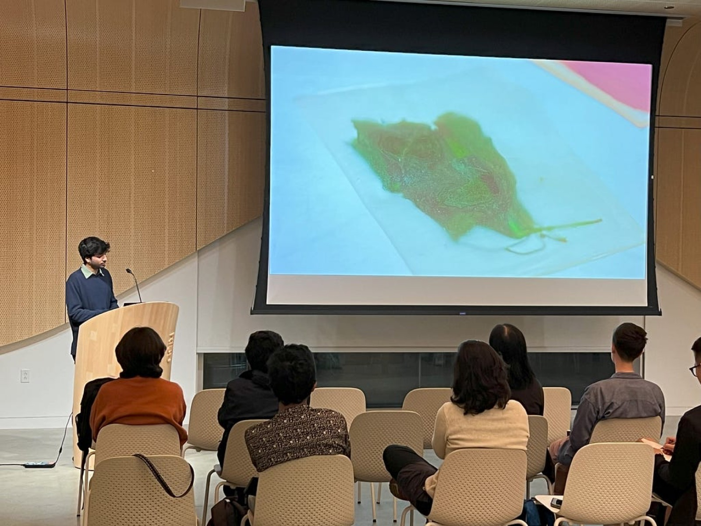
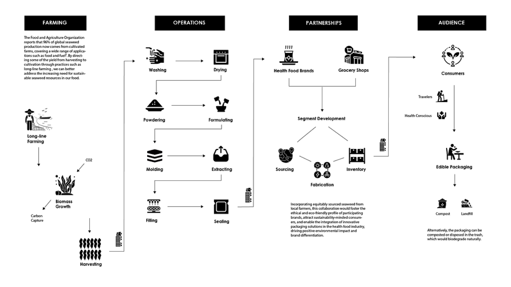
Thanks for reading!